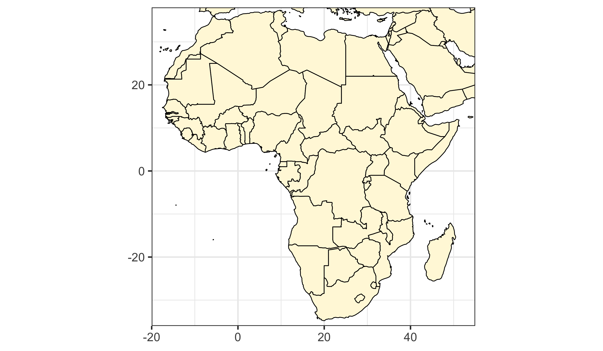
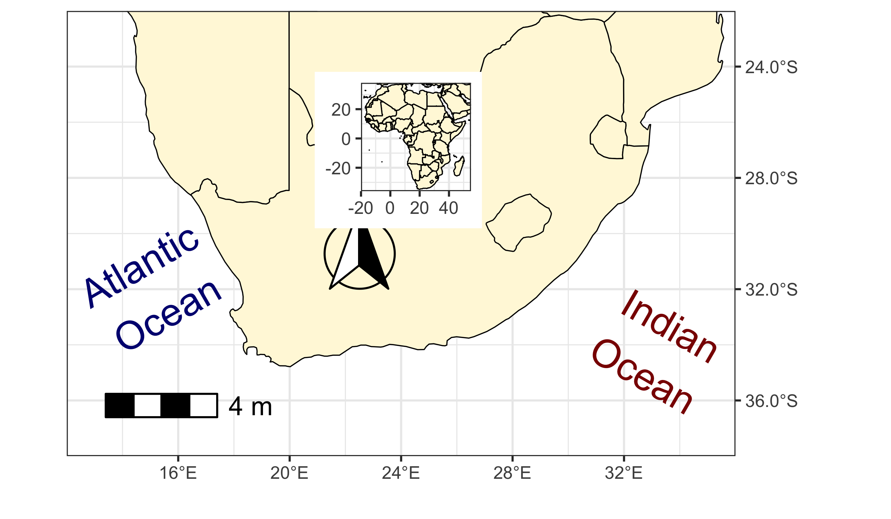

10. Mapping with Style
Turning up the Style
Smit, A. J. ![]()


“The world is complex, dynamic, multidimensional; the paper is static, flat. How are we to represent the rich visual world of experience and measurement on mere flatland?”
— Edward Tufte
“Science flies you to the moon. Religion flies you into buildings.”
— Victor Stenger
Now that you have learned the basics of creating a beautiful map in ggplot2 it is time to look at some of the more particular things you will need to make your maps extra stylish. There are also a few more things you need to learn how to do before your maps can be truly publication quality.
At this point, it is important to remember that style is not decoration; it is constraint. Maps are arguments, not illustrations. Every stylistic choice should help the reader orient themselves, interpret the data honestly, and see the intended message without confusion.
If we have not yet loaded the tidyverse let us do so.
1 Default Maps
In order to access the default maps included with the tidyverse we will use the function borders().
borders() is convenient and quick, but it is coarse and imprecise. Use it for rough context or exploratory work. For publishable maps or analysis, load proper spatial data (e.g., shapefiles or sf objects) with correct boundaries and metadata.

Jikes! It is as simple as that to load a map of the whole planet. Usually you are not going to want to make a map of the entire planet, so let us see how to focus on just the area around South Africa.
coord_equal() preserves a 1:1 relationship between x and y units. Without it, the map can look fine but be geometrically misleading.
Here is the next iteration. What is different about the code that causes the map to look very different?

That is a very tidy looking map of South(ern) Africa without needing to load any files. The extent values (xlim, ylim) are a design decision: too tight and you clip context; too loose and you lose focus. Use the scientific question to guide the bounds.
2 Specific Labels
A map is almost always going to need some labels and other visual cues. You saw in the previous section how to add site labels. The following code chunk shows how this differs if you want to add just one label at a time. This can be useful if each label needs to be different from all other labels for whatever reason. You may also see that the text labels we are creating have \n in them. When R sees these two characters together like this it reads this as an instruction to return down a line. Let us run the code to make sure you see what this means.
Label placement is one of the hardest problems in cartography. A few rules you should break only deliberately:
- Avoid overlaps and do not obscure the data.
- Respect visual hierarchy: water bodies should not visually overpower land, and context labels should not dominate the data.
- Use style (size, colour, angle) only to encode meaning, not decoration.
Also note the distinction between manual labels (a small number of contextual labels) and data-driven labels (labels generated from your data). Manual labels are appropriate for oceans, regions, and context; data-driven labels should be automated and consistent.

3 Scale Bars
With your fancy labels added, let us insert a scale bar next. There is no default scale bar function in the tidyverse, which is why you have loaded ggspatial. This package is devoted to adding scale bars and North arrows to ggplot2 figures. There are heaps of options so you will just focus on one of them for now. It is a bit finicky so to get it looking exactly how you want it requires some guessing and checking. Please feel free to play around with the coordinates below.
Decision rules:
- Include a scale bar when distances matter to interpretation.
- Omit it on very small-scale maps or when it adds clutter without value.
- Use a north arrow only if orientation is ambiguous or non-standard.
sa_3 <- sa_2 +
annotation_scale(
location = "bl", # bottom left; you can also specify "tl", "tr", etc.
width_hint = 0.2, # relative width of the scale bar
height = unit(0.3, "cm"), # scale bar height
text_cex = 0.8, # text size
pad_x = unit(0.5, "cm"), # horizontal offset
pad_y = unit(0.5, "cm"), # vertical offset
bar_cols = c("black", "white")
) +
annotation_north_arrow(
location = "bl",
which_north = "true", # true north, not grid north
pad_x = unit(3, "cm"), # adjust to approximate your original x.min/x.max
pad_y = unit(2, "cm"), # adjust to approximate your original y.min/y.max
style = north_arrow_fancy_orienteering
)
sa_34 Advanced Styling: Insets and Coordinate Labels
Inset maps, coordinate labels, and export are not optional niceties — they are often what distinguishes a competent map from a careless one. If your main map needs geographic context, use an inset. Here we build a simple Africa inset using borders() so it stays lightweight and reliable.

We can add the inset using a grob. This is a controlled way to place an entire plot inside another plot.

Now tweak coordinate labels for cartographic conventions:

Export with intention — size, aspect ratio, and resolution must match the medium.
- Clear title and legend?
- Coordinate system and aspect ratio appropriate?
- Labels readable and not obscuring data?
- Scale bar or north arrow included only when needed?
- Export size and resolution appropriate for the audience?
- Over‑labelling and visual clutter
- Decorative colours that imply meaning
- Cropping boundaries in ways that mislead
- Using default borders when precision is required
Analytic maps emphasise data integrity and scale; illustrative maps prioritise narrative and clarity. Decide which you are making before you style.
Citation
@online{a._j.2021,
author = {A. J. , Smit},
title = {10. {Mapping} with {Style}},
date = {2021-01-01},
url = {http://samos-r.netlify.app/intro_r/10-mapping_style.html},
langid = {en}
}